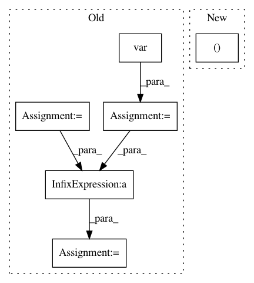

6432d83fc96f607d48117681c9de71ce7e7ba8ec,neurodsp/sim/combined.py,,sim_noisy_oscillation,#Any#Any#Any#Any#Any#Any#Any#,11
Before Change
oscillation = sim_oscillation(n_seconds, fs, freq, rdsym=rdsym)
// Normalize by variance
oscillation_var = np.var(oscillation)
noise_var = np.var(noise)
noise = np.sqrt(noise**2 * oscillation_var /
(noise_var * ratio_osc_var)) * np.sign(noise)
// Combine oscillation and noise
osc = oscillation + noise
After Change
oscillation = sim_oscillation(n_seconds, fs, freq, rdsym=rdsym)
// Normalize & combine signal
oscillation, noise = normalize_by_variance(oscillation, noise, ratio_osc_var)
osc = oscillation + noise
return osc
In pattern: SUPERPATTERN
Frequency: 3
Non-data size: 6
Instances
Project Name: neurodsp-tools/neurodsp
Commit Name: 6432d83fc96f607d48117681c9de71ce7e7ba8ec
Time: 2019-03-17
Author: tdonoghue@ucsd.edu
File Name: neurodsp/sim/combined.py
Class Name:
Method Name: sim_noisy_oscillation
Project Name: neurodsp-tools/neurodsp
Commit Name: 6432d83fc96f607d48117681c9de71ce7e7ba8ec
Time: 2019-03-17
Author: tdonoghue@ucsd.edu
File Name: neurodsp/sim/combined.py
Class Name:
Method Name: sim_noisy_bursty_oscillation
Project Name: ixaxaar/pytorch-dnc
Commit Name: a6667bf98c59a7447a6bc55869459e83f5bdb603
Time: 2017-12-07
Author: root@ixaxaar.in
File Name: dnc/sparse_memory.py
Class Name: SparseMemory
Method Name: read_from_sparse_memory